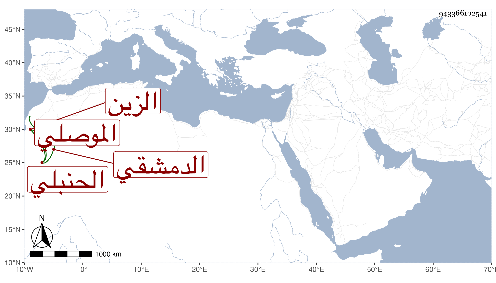

0902Sakhawi.DawLamic.ITO20230111-ara1.EIS1600.943366102541
Biography ID: 943366102541
795
داود بن سليمان بن عبد الله الزين الموصلي ثم الدمشقي الحنبلي . ولد تقريبا سنة أربع وستين وسبعمائة ، وسمع بقراءة الشيخ علي بن زكنون على الجمال ابن الشرائحي الشمائل للترمذي أنابها الصلاح بن أبي عمر بل كان يذكر أنه سمع على ابن رجب الحافظ شرحه للاربعين النووية ومجلسا في فصل الربيع من لطائفه مع حضور مواعيده وأنه سمع على الشهاب بن حجي صحيح البخاري وكتبا سماها ، وقد حدث كتب عنه بعض أصحابنا ، وكان شيخا صالحا فاضلا . مات في سنة أربع وأربعين . أرخه ابن اللبودي .
